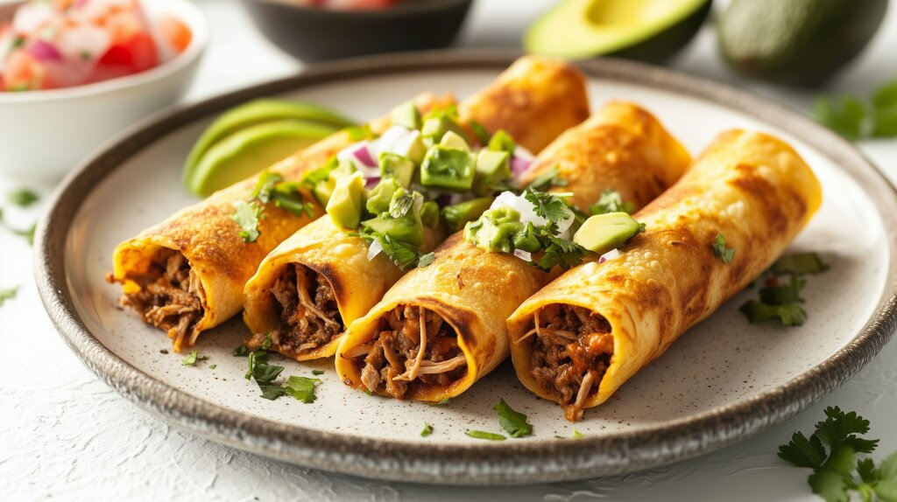

Cultural Hispanic Recipe from Mexico!
*Flautas*
The wonderful recipe written by: Marquez, Yvette.Weblink located here: https://muybuenoblog.com/crispy-chicken-flautas/

Photo by Marco Verch
Weblink:
https://ccnull.de/foto/flautas-mit-zerkleinertem-rindfleisch-und-avocado-auf-rustikalem-teller/1098477
Ingredients:
- 2lbs of Chicken Thighs
- 1/2 yellow onion
- 2 garlic cloves
- 1 tsp salt
- 3 roma tomatos
- 1 peper of your choice perferably jalapeno chopped
- About 10-20 tortillas of your choice preferably corn tortillas
- 1 tsp oil
- Sour cream
- Salsa of your choice
- Shredded lettuce
- Cilantro
- Cheese topping of your choice perferabbly Queso Fresco or Cotija
Rate This Recipe
Conversion
=
Equipment:
- Large Pot
- Cutting board and cutting tools
- skillet
Directions:
- Add chicken, 1/4 onion garlic, and salt in a pot at a medium heat.let the pot simmer until chicken is ready.
- Once chicken is ready, shred it.
- Pan toss tomatos, jalapeno, and the remainder of the onion.
- Once everything is cooked. with warm tortillas, wrap the filling securely.
- In a skillet fill to about an inch of oil. heat the oil approximately to 350.
- Fry flautas to a golden brown.
- Pat the flautas dry and remove the excess oil.
- Place and arrange them on a plate as desired and top them with favorite toppings!
This page was created as an academic activity only